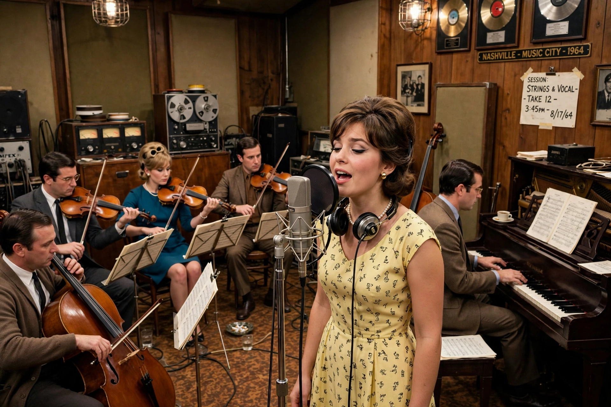

From Wikipedia, the free encyclopedia
| Stylistic origins | Country music, traditional pop, honky-tonk |
|---|---|
| Cultural origins | Late 1950s, Nashville, Tennessee, US |
| Typical instruments | Vocals, piano, strings, steel guitar, electric guitar, bass, drums, background vocals |
| Other topics | Countrypolitan, Music Row, A-Team session musicians |

The Nashville sound is a subgenre of American country music that originated as a replacement for the rough honky-tonk music which was most popular in the 1940s and 1950s. "Nashville sound" was first used in an article in Music Reporter magazine in 1958 and was later referred to in a 1960 Time article about country star Jim Reeves.
Producers such as Chet Atkins, Owen Bradley, and Bob Ferguson smoothed out country's rough edges with lush string sections, sophisticated background vocals, and crooning lead vocals — a style designed to appeal to pop audiences and help country music compete with rock and roll. The sound was centered on Nashville's Music Row studios, including RCA Studio B and Bradley's Quonset Hut Studio.
Where honky-tonk emphasized fiddles, steel guitar, and nasal vocals, Nashville sound productions favored piano (often played by Floyd Cramer), muted "tic-tac" bass, choruses such as the Anita Kerr Singers or the Jordanaires, and orchestral strings. Key artists associated with the sound include Patsy Cline, Jim Reeves, Eddy Arnold, and later Glen Campbell.
In the 1960s and 1970s the style developed further into the even slicker "countrypolitan" sound, associated with producer Billy Sherrill and singers such as Tammy Wynette and Charlie Rich. The polished approach provoked a backlash that produced the outlaw country movement and the Bakersfield sound.